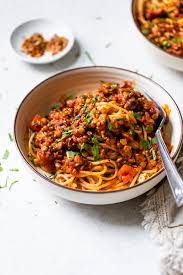

Vegan Spaghetti Bolognese
Description
Instatnly transport your family or dinner party guests to Bologna with this authentic recipe. Guilt free vegan version!
Ingredients
- onion finely chopped
- celery finely chopped
- carrots finely chopped
- garlic
- Green lentils
- dried oregano
- tomato paste
- vegetable stock
- fry finely chopped onion celery and carrots until soft
- add garlic and tomato paste cook until darkens
- add lentils oregano and vegebtable stock
- simmer on low heat for 4 hours